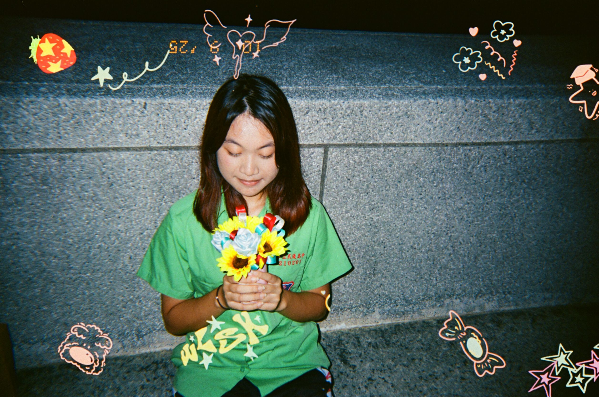

auto_awesome
歡迎交流與探索！

draw
favorite
🧪
保持好奇心，獨立思考
徐湘庭
✨國立中山大學 • 理學領域大學生
location_on
台灣高雄 • 科學探究與發現
@xttting-gif
💬
“保持好奇，獨立思考，讓每一次理解都成為探索世界的新起點。”
— 湘庭的探索哲學
熱情與專注領域
🧪 #化學與科學探索
🌍 #跨領域學習
📚 #深度理解與知識整理
🔬 #科學探究與實作
💡 #獨立思考與問題解決
社群與探索足跡
學習歷程 • 核心指標
🌱
science
科學
化學 × 物理
探索化學與物理的核心原理
biotech
實作
探究實驗
重視實作驗證與實驗精神
psychology
思維
深入探究
重視原理理解、邏輯與知識連結
trending_up
成長
持續前行
保持好奇心、持續探索新的可能